开头 aop部分的解析器由AopNamespaceHandler注册，其init方法:
1 2 3 4 5 6 @Override public void init () registerBeanDefinitionParser("config" , new ConfigBeanDefinitionParser()); registerBeanDefinitionParser("aspectj-autoproxy" , new AspectJAutoProxyBeanDefinitionParser()); registerBeanDefinitionDecorator("scoped-proxy" , new ScopedProxyBeanDefinitionDecorator()); }
aop:config 此标签用以配置pointcut, advisor, aspect，实例:
1 2 3 4 5 <aop:config > <aop:pointcut expression ="execution(* exam.service..*.*(..))" id ="transaction" /> <aop:advisor advice-ref ="txAdvice" pointcut-ref ="transaction" /> <aop:aspect ref ="" /> </aop:config >
ConfigBeanDefinitionParser.parse:
1 2 3 4 5 6 7 8 9 10 11 12 13 14 15 16 17 18 19 20 21 22 @Override public BeanDefinition parse (Element element, ParserContext parserContext) CompositeComponentDefinition compositeDef = new CompositeComponentDefinition(element.getTagName(), parserContext.extractSource(element)); parserContext.pushContainingComponent(compositeDef); configureAutoProxyCreator(parserContext, element); List<Element> childElts = DomUtils.getChildElements(element); for (Element elt: childElts) { String localName = parserContext.getDelegate().getLocalName(elt); if (POINTCUT.equals(localName)) { parsePointcut(elt, parserContext); } else if (ADVISOR.equals(localName)) { parseAdvisor(elt, parserContext); } else if (ASPECT.equals(localName)) { parseAspect(elt, parserContext); } } parserContext.popAndRegisterContainingComponent(); return null ; }
解析 解析的过程主要分为以下几个部分。
proxy-target-class & expose-proxy 对应着aop:config的两个属性，前者代表是否为被代理这生成CGLIB子类，默认false，只为接口生成代理子类(话说如果不生成子类那么怎么拦截?)。后者代表是否将代理bean暴露给用户，如果暴露，可以通过Spring AopContext类获得，默认不暴露。
解析的过程无非就是属性的读取，不再详细说明。
aop:pointcut pointcut的解析是一个生成一个BeanDefinition并将其id, expression等属性保存在BeanDefinition中。注意以下几点:
BeanDefinition的ID来自于id属性，如果没有，那么自动生成。
BeanDefinition的class是AspectJExpressionPointcut。
BeanDefinition的scope为prototype。
AspectJExpressionPointcut类图:
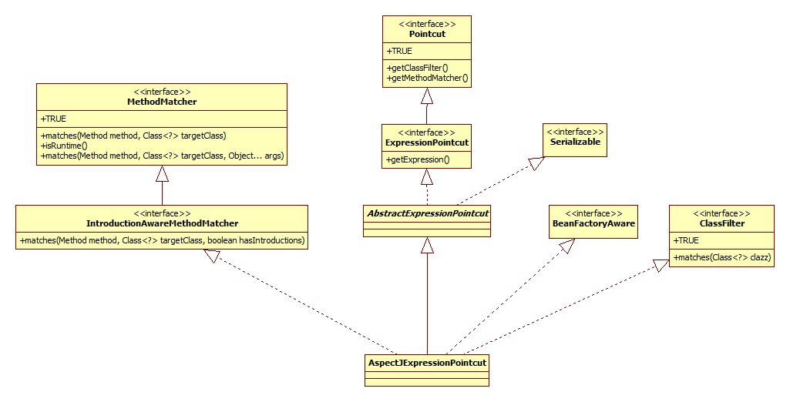
aop:advisor 首先是其所有属性的示例:
1 <aop:advisor id ="" order ="" advice-ref ="aopAdvice" pointcut ="" pointcut-ref ="" />
advisor概念是Spring独有的，来自于上古时代，应该是较早时候的aop概念的实现: AOP Alliance (Java/J2EE AOP standards) 。Spring官方的说法: aop-schema-advisors 。
其相关的包/类就在spring-aop下:
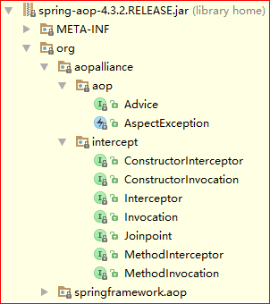
advice-ref是必须的属性，并且这里的advice必须实现org.aopalliance.aop.Advice的子接口 。这些子接口指的什么呢，见Spring官方文档: aop-api-advice-types 。比如org.aopalliance.intercept.MethodInterceptor。
最常见的用途就是结合事务使用:
1 2 3 4 5 6 7 8 9 10 11 12 <tx:advice id ="txAdvice" transaction-manager ="transactionManager" > <tx:attributes > <tx:method name ="get*" read-only ="true" propagation ="NOT_SUPPORTED" /> <tx:method name ="find*" read-only ="true" propagation ="NOT_SUPPORTED" /> <tx:method name ="*" propagation ="REQUIRED" /> </tx:attributes > </tx:advice > <aop:config > <aop:pointcut expression ="execution(* exam.service..*.*(..))" id ="transaction" /> <aop:advisor advice-ref ="txAdvice" pointcut-ref ="transaction" /> </aop:config >
解析的套路和楼上类似，只不过此处的beanClass是DefaultBeanFactoryPointcutAdvisor，其类图:
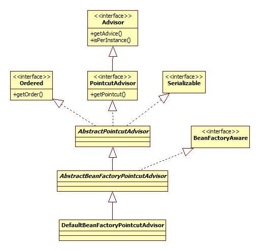
另外注意对于pointcut和pointcut-ref两者处理的区别，对于pointcut属性，Spring会同样创建一个AspectJExpressionPointcut类型的BeanDefinition，对于pointcut-ref会生成一个RuntimeBeanReference对象指向原pointcut的引用。此类的类图:
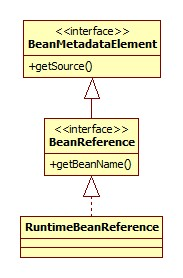
可以看出，这种aop的实现需要实现各种接口，所以不应该再使用此种方式进行aop，除了Spring内部的实现。
aop:aspect 配置举例:
1 2 3 4 5 6 7 8 9 10 <bean id ="aopAdvice" class ="base.aop.AopDemoAdvice" /> <bean id ="aopDemo" class ="base.aop.AopDemo" /> <aop:config > <aop:pointcut id ="pointcut" expression ="execution(* base.aop.AopDemo.send())" /> <aop:aspect ref ="aopAdvice" > <aop:before method ="beforeSend" pointcut-ref ="pointcut" /> <aop:after method ="afterSend" pointcut-ref ="pointcut" /> </aop:aspect > </aop:config >
解析形成的BeanDefinition结构如下:
1 2 3 4 5 6 7 8 9 10 11 12 13 14 15 16 17 18 19 20 21 22 23 24 25 26 27 28 29 AspectComponentDefinition beanRefArray RuntimeBeanReference(aop:aspect的ref属性) beanDefArray // 被注册 RootBeanDefinition(aop:declare-parents) beanClass: DeclareParentsAdvisor ConstructorArg implement-interface types-matching default-impl delegate-ref // 被注册 RootBeanDefinition(aop:before,aop:after...) beanClass: AspectJPointcutAdvisor ConstructorArg RootBeanDefinition beanClass: 由子标签决定 ConstructorArg RootBeanDefinition beanClass: MethodLocatingFactoryBean properties targetBeanName: aspectName methodName: method属性 RootBeanDefinition beanClass: SimpleBeanFactoryAwareAspectInstanceFactory properties aspectBeanName: aspectName //还有pointcut定义和引用...
结构图里面的aspectName来自于aop:aspect的ref属性，此属性是必须配置的，因为Spring要知道aop:before等标签指定的方法是哪个bean/类/对象的方法。
aop:declare-parents 对于aop:declare-parents子标签，其决定的是代理子类应该实现哪些接口:
1 <aop:declare-parents types-matching ="" implement-interface ="" />
此标签最终被解析成为beanClass为DeclareParentsAdvisor的BeanDefinition，并注册到容器中。其类图:
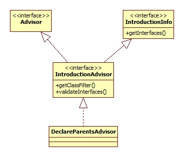
其它 此处的其它指的是aop:before, aop:after等最核心的标签。其最终被解析为beanClass为AspectJPointcutAdvisor的BeanDefinition，类图:
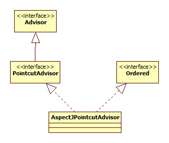
正如上面结构图里所描述的，其构造参数为一个BeanDefintion，此对象的beanClass是不确定的，由aop:before/after中的before和after决定，代码:
1 2 3 4 5 6 7 8 9 10 11 12 13 14 private Class<?> getAdviceClass(Element adviceElement, ParserContext parserContext) { String elementName = parserContext.getDelegate().getLocalName(adviceElement); if (BEFORE.equals(elementName)) { return AspectJMethodBeforeAdvice.class; } else if (AFTER.equals(elementName)) { return AspectJAfterAdvice.class; } else if (AFTER_RETURNING_ELEMENT.equals(elementName)) { return AspectJAfterReturningAdvice.class; } else if (AFTER_THROWING_ELEMENT.equals(elementName)) { return AspectJAfterThrowingAdvice.class; } else if (AROUND.equals(elementName)) { return AspectJAroundAdvice.class; } }
而此BeanDefintion的构造参数又由以下三个部分组成:
MethodLocatingFactoryBean 第一个便是beanClass为此类型的BeanDefinition。其内部有一个methodName属性，存储的便是标签的method属性的值。其类图:
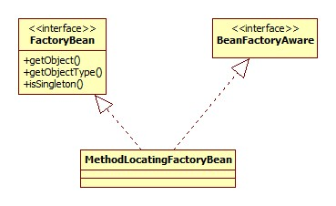
这个东西是干什么用的呢?其实是用于在指定的advice(aop:aspect的ref属性)中得到Method对象。入口在setBeanFactory方法:
1 2 3 4 5 @Override public void setBeanFactory (BeanFactory beanFactory) Class<?> beanClass = beanFactory.getType(this .targetBeanName); this .method = BeanUtils.resolveSignature(this .methodName, beanClass); }
SimpleBeanFactoryAwareAspectInstanceFactory 其类图:
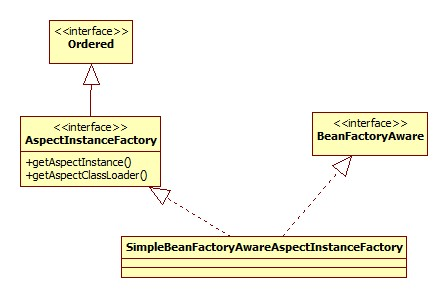
此类用于在BeanFactory中定位aspect bean，这个bean指的是谁?
1 <bean id ="aopAdvice" class ="base.aop.AopDemoAdvice" />
就是它!查找很简单:
1 2 3 4 @Override public Object getAspectInstance () return this .beanFactory.getBean(this .aspectBeanName); }
总结 从整个aop:aspect标签最终被解析为一个AspectJPointcutAdvisor来看，Spring在实现上仍将其作为Advisor的概念。
代理子类生成 关键在于AspectJAwareAdvisorAutoProxyCreator，此对象在ConfigBeanDefinitionParser的configureAutoProxyCreator方法中注册，其类图:
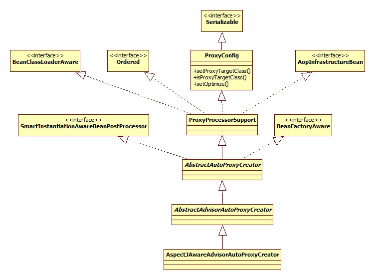
那么子类生成的入口在哪里呢?
入口 从AspectJAwareAdvisorAutoProxyCreator的类图中可以看出，此类实现了SmartInstantiationAwareBeanPostProcessor接口，所以很容易想到入口应该位于此接口及其父接口(BeanPostProcessor)的相关方法中。实际上确实是这样的。
postProcessBeforeInstantiation 调用时机 先来回顾一下此方法在Bean创建的过程中的调用时机。
AbstractAutowireCapableBeanFactory.createBean部分源码:
1 2 3 4 5 6 Object bean = resolveBeforeInstantiation(beanName, mbdToUse); if (bean != null ) { return bean; } Object beanInstance = doCreateBean(beanName, mbdToUse, args);
可以看出，调用发生在Bean实例的创建之前。
源码 AbstractAutoProxyCreator.postProcessBeforeInstantiation:
1 2 3 4 5 6 7 8 9 10 11 12 13 14 15 16 17 18 19 20 21 22 23 24 25 @Override public Object postProcessBeforeInstantiation (Class<?> beanClass, String beanName) Object cacheKey = getCacheKey(beanClass, beanName); if (beanName == null || !this .targetSourcedBeans.contains(beanName)) { if (this .advisedBeans.containsKey(cacheKey)) { return null ; } if (isInfrastructureClass(beanClass) || shouldSkip(beanClass, beanName)) { this .advisedBeans.put(cacheKey, Boolean.FALSE); return null ; } } if (beanName != null ) { TargetSource targetSource = getCustomTargetSource(beanClass, beanName); if (targetSource != null ) { this .targetSourcedBeans.add(beanName); Object[] specificInterceptors = getAdvicesAndAdvisorsForBean(beanClass, beanName, targetSource); Object proxy = createProxy(beanClass, beanName, specificInterceptors, targetSource); this .proxyTypes.put(cacheKey, proxy.getClass()); return proxy; } } return null ; }
下面分部分对其进行说明。
应该代理 ? Spring首先会对当前的beanClass进行检查(是否应该/可以对其进行代理)。
不应该代理的类分为两种情况:
用于实现AOP的Spring基础类，此种情况在isInfrastructureClass方法中完成检测(单词Infrastructure正是基础设施的意思)。
子类定义的应该跳过的类，默认AbstractAutoProxyCreator的实现直接返回false，即都不应该跳过。
基础类检测 AbstractAutoProxyCreator.isInfrastructureClass:
1 2 3 4 5 6 7 protected boolean isInfrastructureClass (Class<?> beanClass) boolean retVal = Advice.class.isAssignableFrom(beanClass) || Pointcut.class.isAssignableFrom(beanClass) || Advisor.class.isAssignableFrom(beanClass) || AopInfrastructureBean.class.isAssignableFrom(beanClass); return retVal; }
可以看出，任何Advice、Pointcut、Advisor、AopInfrastructureBean的子类都被当做Spring实现AOP的基础设施类。
跳过类检测 即shouldSkip方法。前面提到了，AbstractAutoProxyCreator的默认实现直接返回fasle，这一特性被子类AspectJAwareAdvisorAutoProxyCreator重写:
1 2 3 4 5 6 7 8 9 10 11 12 @Override protected boolean shouldSkip (Class<?> beanClass, String beanName) List<Advisor> candidateAdvisors = findCandidateAdvisors(); for (Advisor advisor : candidateAdvisors) { if (advisor instanceof AspectJPointcutAdvisor) { if (((AbstractAspectJAdvice) advisor.getAdvice()).getAspectName().equals(beanName)) { return true ; } } } return super .shouldSkip(beanClass, beanName); }
那么此方法跳过的是谁呢？
其实就是我们通过aop:aspect标签配置的切面，即:
1 2 3 4 5 <bean id ="aopAdvice" class ="base.aop.AopDemoAdvice" /> <aop:config > <aop:aspect ref ="aopAdvice" > </aop:aspect > </aop:config >
里的aopAdvice。
从前面的aop:aspect一节中可以知道，Spring对于aop:config的解析其实是把aop:before/after等标签解析成为了AspectJPointcutAdvisor类型的BeanDefinition，而aopAdvice以AbstractAspectJAdvice的类型保存在其中。
所以可以得出结论: Spring跳过的是适用于当前bean的Advisor的Advice/Aspect对象 。
AOP逻辑 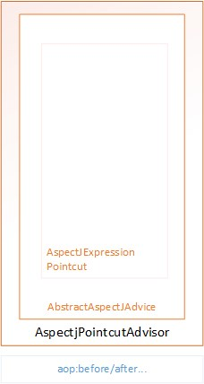
那么Spring又是如何找到适用于当前bean的Advisor的呢?
Advisor寻找 关键便是findCandidateAdvisors方法，此方法将逻辑委托给BeanFactoryAdvisorRetrievalHelper.findAdvisorBeans:
1 2 3 4 5 6 7 8 9 10 11 12 13 14 15 16 17 18 19 20 21 22 23 24 25 public List<Advisor> findAdvisorBeans () String[] advisorNames = null ; synchronized (this ) { advisorNames = this .cachedAdvisorBeanNames; if (advisorNames == null ) { advisorNames = BeanFactoryUtils.beanNamesForTypeIncludingAncestors( this .beanFactory, Advisor.class, true , false ); this .cachedAdvisorBeanNames = advisorNames; } } if (advisorNames.length == 0 ) { return new LinkedList<Advisor>(); } List<Advisor> advisors = new LinkedList<Advisor>(); for (String name : advisorNames) { if (isEligibleBean(name)) { if (!this .beanFactory.isCurrentlyInCreation(name)) { advisors.add(this .beanFactory.getBean(name, Advisor.class)); } } } return advisors; }
可以看出，首先是从容器中获取到所有的Advisor示例，然后调用isEligibleBean方法逐一判断Advisor是否适用于当前bean。
适用性检测 指的便是isEligibleBean方法。最终调用的是AbstractAdvisorAutoProxyCreator的同名方法:
1 2 3 protected boolean isEligibleAdvisorBean (String beanName) return true ; }
而AbstractAdvisorAutoProxyCreator的子类AspectJAwareAdvisorAutoProxyCreator并没有覆盖此方法，所以此处会对容器中所有的Advisor的Advice进行跳过 。
检测结果缓存 因为postProcessBeforeInstantiation方法会在每个bean初始化之前被调用，所以没有必要每次都真的进行基础类检测和跳过类检测，Spring使用了advisedBeans作为缓存用以提高性能。
TargetSource 从源码中可以看出，对于自定义的TargetSource，Spring会立即执行代理子类的创建。Spring的代理其实是针对TargetSource的，其类图:
关于此接口在此不展开叙述。
postProcessAfterInitialization AbstractAutoProxyCreator.postProcessAfterInitialization:
1 2 3 4 5 6 7 8 9 10 @Override public Object postProcessAfterInitialization (Object bean, String beanName) if (bean != null ) { Object cacheKey = getCacheKey(bean.getClass(), beanName); if (!this .earlyProxyReferences.contains(cacheKey)) { return wrapIfNecessary(bean, beanName, cacheKey); } } return bean; }
关键便在于wrapIfNecessary方法:
1 2 3 4 5 6 7 8 9 10 11 12 13 14 15 16 17 18 19 20 21 22 23 24 25 protected Object wrapIfNecessary (Object bean, String beanName, Object cacheKey) if (beanName != null && this .targetSourcedBeans.contains(beanName)) { return bean; } if (Boolean.FALSE.equals(this .advisedBeans.get(cacheKey))) { return bean; } if (isInfrastructureClass(bean.getClass()) || shouldSkip(bean.getClass(), beanName)) { this .advisedBeans.put(cacheKey, Boolean.FALSE); return bean; } Object[] specificInterceptors = getAdvicesAndAdvisorsForBean(bean.getClass(), beanName, null ); if (specificInterceptors != DO_NOT_PROXY) { this .advisedBeans.put(cacheKey, Boolean.TRUE); Object proxy = createProxy( bean.getClass(), beanName, specificInterceptors, new SingletonTargetSource(bean)); this .proxyTypes.put(cacheKey, proxy.getClass()); return proxy; } this .advisedBeans.put(cacheKey, Boolean.FALSE); return bean; }
可以看出，在此方法的开头又进行了基础类以及跳过类的检测，再次不再赘述。
Advisor寻找 即getAdvicesAndAdvisorsForBean方法，这里进行的便是去容器中寻找适用于当前bean的Advisor，最终调用的是
AbstractAdvisorAutoProxyCreator.findEligibleAdvisors:
1 2 3 4 5 6 7 8 9 protected List<Advisor> findEligibleAdvisors (Class<?> beanClass, String beanName) List<Advisor> candidateAdvisors = findCandidateAdvisors(); List<Advisor> eligibleAdvisors = findAdvisorsThatCanApply(candidateAdvisors, beanClass, beanName); extendAdvisors(eligibleAdvisors); if (!eligibleAdvisors.isEmpty()) { eligibleAdvisors = sortAdvisors(eligibleAdvisors); } return eligibleAdvisors; }
findCandidateAdvisors前面已经说过了。
适用性判断 findAdvisorsThatCanApply最终调用AopUtils.findAdvisorsThatCanApply:
1 2 3 4 5 6 7 8 9 10 11 12 13 14 15 16 17 18 19 20 21 22 public static List<Advisor> findAdvisorsThatCanApply (List<Advisor> candidateAdvisors, Class<?> clazz) if (candidateAdvisors.isEmpty()) { return candidateAdvisors; } List<Advisor> eligibleAdvisors = new LinkedList<Advisor>(); for (Advisor candidate : candidateAdvisors) { if (candidate instanceof IntroductionAdvisor && canApply(candidate, clazz)) { eligibleAdvisors.add(candidate); } } boolean hasIntroductions = !eligibleAdvisors.isEmpty(); for (Advisor candidate : candidateAdvisors) { if (candidate instanceof IntroductionAdvisor) { continue ; } if (canApply(candidate, clazz, hasIntroductions)) { eligibleAdvisors.add(candidate); } } return eligibleAdvisors; }
关键在于canApply方法，从源码中可以看出，对于Advisor的判断分为了IntroductionAdvisor以及非IntroductionAdvisor两种情况。
这种分开处理导致了IntroductionAdvisor在Advisor链中总是位于非IntroductionAdvisor前面 。
canApply(candidate, clazz)其实等价于canApply(candidate, clazz, false):
1 2 3 4 5 6 7 8 9 10 11 12 13 public static boolean canApply (Advisor advisor, Class<?> targetClass, boolean hasIntroductions) if (advisor instanceof IntroductionAdvisor) { return ((IntroductionAdvisor) advisor).getClassFilter().matches(targetClass); } else if (advisor instanceof PointcutAdvisor) { PointcutAdvisor pca = (PointcutAdvisor) advisor; return canApply(pca.getPointcut(), targetClass, hasIntroductions); } else { return true ; } }
很明显，对于引入Advisor与其它Advisor是两种不同的判断方式。
引入 引入的概念在下面aop:scoped-proxy中有提到。因为引入的目的在于动态地向一个类添加另一种功能(接口)，所以只要判断给定的类是否是要引入到的类即可。
其它 AopUtils.canApply:
1 2 3 4 5 6 7 8 9 10 11 12 13 14 15 16 17 18 19 20 21 22 23 24 25 26 27 28 29 30 31 public static boolean canApply (Pointcut pc, Class<?> targetClass, boolean hasIntroductions) if (!pc.getClassFilter().matches(targetClass)) { return false ; } MethodMatcher methodMatcher = pc.getMethodMatcher(); if (methodMatcher == MethodMatcher.TRUE) { return true ; } IntroductionAwareMethodMatcher introductionAwareMethodMatcher = null ; if (methodMatcher instanceof IntroductionAwareMethodMatcher) { introductionAwareMethodMatcher = (IntroductionAwareMethodMatcher) methodMatcher; } Set<Class<?>> classes = new LinkedHashSet<Class<?>> (ClassUtils.getAllInterfacesForClassAsSet(targetClass)); classes.add(targetClass); for (Class<?> clazz : classes) { Method[] methods = ReflectionUtils.getAllDeclaredMethods(clazz); for (Method method : methods) { if ((introductionAwareMethodMatcher != null && introductionAwareMethodMatcher .matches(method, targetClass, hasIntroductions)) || methodMatcher.matches(method, targetClass)) { return true ; } } } return false ; }
Spring的Pointcut由ClassFilter和MethodMatcher两部分组成，其中前者用以判断给定的类是否在Pointcut的匹配范围内，后者用以在ClassFilter匹配满足的情况下判断给定的方法是否在Pointcut匹配的范围内。
从源码中可以看出，如果ClassFilter匹配得到满足并且Pointcut并不能匹配此类的任意方法，便会用反射的方法获取targetClass(被检测类)的全部方法逐一交由Pointcut的MethodMatcher进行检测 。
关于Pointcut表达式是如何解析及存储的在此不再展开。
Advisor扩展 AbstractAdvisorAutoProxyCreator.extendAdvisors允许子类向Advisor链表中添加自己的Advisor。子类AspectJAwareAdvisorAutoProxyCreator重写了此方法，其逻辑是:
如果Advisor链表中的Advisor含有AspectJ Advice，那么将会把一个ExposeInvocationInterceptor添加到链表的表头，目的在于将MethodInvocation以ThreadLocal的方式暴露给后面所有的Advisor，暂不知道具体的用途。
排序 即sortAdvisors方法，用于对实现了Ordered接口的Advisor进行排序。
创建 AbstractAutoProxyCreator.createProxy(略去非关键代码):
1 2 3 4 5 6 7 8 9 10 11 protected Object createProxy ( Class<?> beanClass, String beanName, Object[] specificInterceptors, TargetSource targetSource) ProxyFactory proxyFactory = new ProxyFactory(); proxyFactory.copyFrom(this ); Advisor[] advisors = buildAdvisors(beanName, specificInterceptors); for (Advisor advisor : advisors) { proxyFactory.addAdvisor(advisor); } return proxyFactory.getProxy(getProxyClassLoader()); }
JDK动态代理 or Cglib 由DefaultAopProxyFactory.createAopProxy方法决定使用何种方式创建代理子类。
1 2 3 4 5 6 7 8 9 10 11 12 13 @Override public AopProxy createAopProxy (AdvisedSupport config) throws AopConfigException if (config.isOptimize() || config.isProxyTargetClass() || hasNoUserSuppliedProxyInterfaces(config)) { Class<?> targetClass = config.getTargetClass(); if (targetClass.isInterface() || Proxy.isProxyClass(targetClass)) { return new JdkDynamicAopProxy(config); } return new ObjenesisCglibAopProxy(config); } else { return new JdkDynamicAopProxy(config); } }
逻辑很明显，如果指定了(proxy-target-classs设为true)使用Cglib，那么就会使用Cglib的方式，如果没有指定(或为false)，那么先回检测被代理类是否实现了自己的接口，如果实现了，那么就采用JDK动态代理的方式。
JDK动态代理 JdkDynamicAopProxy.getProxy:
1 2 3 4 5 6 7 8 9 @Override public Object getProxy (ClassLoader classLoader) Class<?>[] proxiedInterfaces = AopProxyUtils.completeProxiedInterfaces(this .advised, true ); findDefinedEqualsAndHashCodeMethods(proxiedInterfaces); return Proxy.newProxyInstance(classLoader, proxiedInterfaces, this ); }
可以看出，关键的InvocationHandler参数其实就是JdkDynamicAopProxy自身。
其invoke方法较长，源码就不贴了，下面进行分部分说明。
equals & hashCode 如果被代理类实现了equals或者是hashCode方法，那么生成的代理子类的equals、hashCode方法实际上执行的是JdkDynamicAopProxy相应方法的逻辑。
invoke方法部分源码:
1 2 3 4 if (!this .equalsDefined && AopUtils.isEqualsMethod(method)) { return equals(args[0 ]); }
链式调用 对于切点方法，比如前面aop:aspect示例配置中的beforeSend
1 <aop:before method ="beforeSend" pointcut-ref ="pointcut" />
Spring会创建一个MethodInvocation对象对所有相关的Advisor进行链式调用。invoke相关源码:
1 2 3 List<Object> chain = this .advised.getInterceptorsAndDynamicInterceptionAdvice(method, targetClass); invocation = new ReflectiveMethodInvocation(proxy, target, method, args, targetClass, chain); Object retVal = invocation.proceed();
Cglib 同样是对于Advisor的链式调用，不再详细展开。
aop:scoped-proxy 此配置一般是这样使用:
1 2 3 4 5 6 <bean id ="userPreferences" class ="com.foo.UserPreferences" scope ="session" > <aop:scoped-proxy /> </bean > <bean id ="userManager" class ="com.foo.UserManager" > <property name ="userPreferences" ref ="userPreferences" /> </bean >
对于ref属性，只会在userManager初始化时注入一次 。这会造成什么问题呢?以session的Scope为例，因为只会注入一次，所以，userManager引用的始终是同一个userPreferences对象，即使现在可能已经过时了 。此配置便可以使userManager引用的其实是一个对代理的引用，所以可以始终获取到最新的userPreferences。
其作用和注解@ScopedProxy相同。
其解析由ScopedProxyBeanDefinitionDecorator完成，类图:
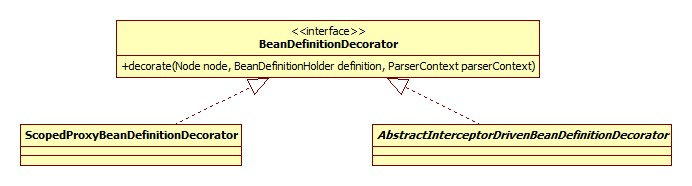
解析 入口 从类图可以看出，ScopedProxyBeanDefinitionDecorator和之前的解析器都不同，它的调用入口不同以往:
DefaultBeanDefinitionDocumentReader.processBeanDefinition:
1 2 3 4 5 6 7 protected void processBeanDefinition (Element ele, BeanDefinitionParserDelegate delegate) BeanDefinitionHolder bdHolder = delegate.parseBeanDefinitionElement(ele); if (bdHolder != null ) { bdHolder = delegate.decorateBeanDefinitionIfRequired(ele, bdHolder); } }
BeanDefinitionParserDelegate.decorateIfRequired:
1 2 3 4 5 6 7 8 9 10 11 12 13 public BeanDefinitionHolder decorateIfRequired ( Node node, BeanDefinitionHolder originalDef, BeanDefinition containingBd) String namespaceUri = getNamespaceURI(node); if (!isDefaultNamespace(namespaceUri)) { NamespaceHandler handler = this .readerContext.getNamespaceHandlerResolver() .resolve(namespaceUri); if (handler != null ) { return handler. decorate(node, originalDef, new ParserContext(this .readerContext, this , containingBd)); } } return originalDef; }
一目了然。
这么做(装饰)的原因就是此标签是用在bean内部的，从decorate的方法签名可以看出，第二个便是父(bean)BeanDefinition，所以叫做装饰。
装饰 1 2 3 4 5 6 7 8 9 10 11 12 13 14 15 16 17 18 @Override public BeanDefinitionHolder decorate (Node node, BeanDefinitionHolder definition, ParserContext parserContext) boolean proxyTargetClass = true ; if (node instanceof Element) { Element ele = (Element) node; if (ele.hasAttribute(PROXY_TARGET_CLASS)) { proxyTargetClass = Boolean.valueOf(ele.getAttribute(PROXY_TARGET_CLASS)); } } BeanDefinitionHolder holder = ScopedProxyUtils. createScopedProxy(definition, parserContext.getRegistry(), proxyTargetClass); String targetBeanName = ScopedProxyUtils.getTargetBeanName(definition.getBeanName()); parserContext.getReaderContext().fireComponentRegistered( new BeanComponentDefinition(definition.getBeanDefinition(), targetBeanName)); return holder; }
核心便是createScopedProxy方法，其源码较长，但是这个套路之前见识过了，就是一个偷天换日: 创建一个新的BeanDefinition对象，beanName为被代理的bean的名字，被代理的bean名字为scopedTarget.原名字。被代理的bean扔将被注册到容器中。
新的BeanDefintion的beanClass为ScopedProxyFactoryBean，其类图:
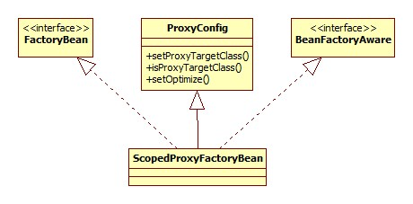
代理生成 入口便是setBeanFactory方法:
1 2 3 4 5 6 7 8 9 10 11 12 13 14 15 16 17 18 19 20 21 22 23 @Override public void setBeanFactory (BeanFactory beanFactory) ConfigurableBeanFactory cbf = (ConfigurableBeanFactory) beanFactory; this .scopedTargetSource.setBeanFactory(beanFactory); ProxyFactory pf = new ProxyFactory(); pf.copyFrom(this ); pf.setTargetSource(this .scopedTargetSource); Class<?> beanType = beanFactory.getType(this .targetBeanName); if (!isProxyTargetClass() || beanType.isInterface() || Modifier.isPrivate(beanType.getModifiers())) { pf.setInterfaces(ClassUtils.getAllInterfacesForClass(beanType, cbf.getBeanClassLoader())); } ScopedObject scopedObject = new DefaultScopedObject (cbf, this .scopedTargetSource.getTargetBeanName()); pf.addAdvice(new DelegatingIntroductionInterceptor(scopedObject)); pf.addInterface(AopInfrastructureBean.class); this .proxy = pf.getProxy(cbf.getBeanClassLoader()); }
这个套路上面也见过了。
Advisor 核心的拦截逻辑是通过DelegatingIntroductionInterceptor来完成的，其类图:
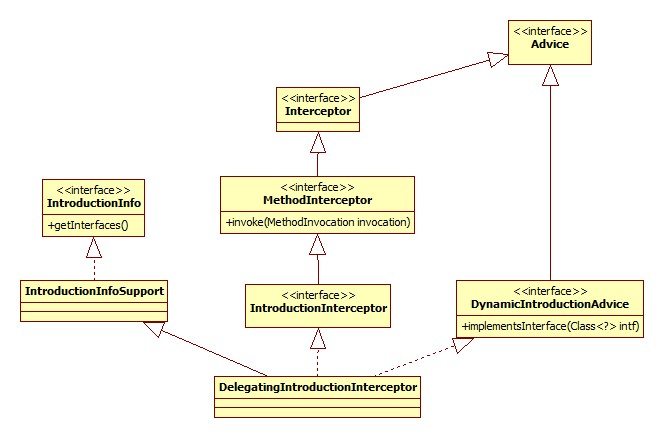
AdvisedSupport.addAdvice方法将其转化为Advisor:
1 2 3 4 5 6 7 8 9 10 11 12 @Override public void addAdvice (int pos, Advice advice) throws AopConfigException if (advice instanceof IntroductionInfo) { addAdvisor(pos, new DefaultIntroductionAdvisor(advice, (IntroductionInfo) advice)); } else if (advice instanceof DynamicIntroductionAdvice) { } else { addAdvisor(pos, new DefaultPointcutAdvisor(advice)); } }
显然，DelegatingIntroductionInterceptor被包装为DefaultIntroductionAdvisor对象。
DelegatingIntroductionInterceptor到底是个什么东西呢?这其实就引出了Spring的Introduction(引入)概念。
引入 通常意义上的Spring AOP一般是在方法层面上进行逻辑的改变，而引入指的是在不修改类源码的情况下，直接为一个类添加新的功能 。下面是一个引入使用的例子:
SpringAOP中的IntroductionInterceptor
例子 自定义Scope 为了便于测试，我们定义一个生存周期仅仅在于一次调用的Scope，源码:
1 2 3 4 5 6 7 8 9 10 11 public class OneScope implements Scope private int index = 0 ; @Override public Object get (String name, ObjectFactory<?> objectFactory) System.out.println("get被调用" ); return new Student("skywalker-" + (index++), index); } }
将其注册到容器中，有两种方法:
在代码中:
1 context.getBeanFactory().registerScope("one" , new OneScope());
配置文件:
1 2 3 4 5 6 7 8 9 <bean class ="org.springframework.beans.factory.config.CustomScopeConfigurer" > <property name ="scopes" > <map > <entry key ="one" > <bean class ="base.scope.OneScope" /> </entry > </map > </property > </bean >
配置 此时就可以使用我们自己的Scope了:
1 2 3 4 5 6 7 <bean class ="base.SimpleBean" id ="simpleBean" > <property name ="student" ref ="student" /> </bean > <bean id ="student" class ="base.Student" scope ="one" > <aop:scoped-proxy /> </bean >
测试 执行以下代码:
1 2 3 SimpleBean simpleBean = context.getBean(SimpleBean.class); System.out.println(simpleBean.getStudent().getName()); System.out.println(simpleBean.getStudent().getName());
可以看到以下输出:
1 2 3 4 get被调用 skywalker-0 get被调用 skywalker-1
可以得出结论: 当调用被代理的bean的方法时才会触发Scoped的语义，只是获得其对象(getStudent)没有效果 。
原理 doGetBean 从根本上来说在于AbstractBeanFactory.doGetBean，部分源码:
1 2 3 4 5 6 7 8 9 10 11 12 13 14 15 16 17 18 else { String scopeName = mbd.getScope(); final Scope scope = this .scopes.get(scopeName); Object scopedInstance = scope.get(beanName, new ObjectFactory<Object>() { @Override public Object getObject () throws BeansException beforePrototypeCreation(beanName); try { return createBean(beanName, mbd, args); } finally { afterPrototypeCreation(beanName); } } }); bean = getObjectForBeanInstance(scopedInstance, name, beanName, mbd); }
scopes是BeanFactory内部的一个 LinkedHashMap类型的对象。scope.get实际上调用的就是我们的OneSocpe的get方法，没有用到ObjectFactory。
所以，每调用一次getBean，就会导致一个新的Sudent被创建并返回 。
代理子类 还有一个关键的问题，从上面可以知道SimpleBean内部的student引用其实是一个CGLIB代理子类的对象，那么当调用这个代理对象的相应方法(比如getName)时，是怎样导致Student重新创建(或是getBean被调用)的?
CallbackFilter & Callback 必须首先理解下CGLIB的这两个概念。
Callback Callback是Cglib所有自定义逻辑(增强)的共同接口 。
其简略类图:
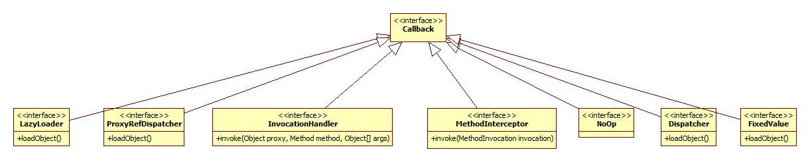
CallbackFilter 在CGLib回调时可以设置对不同方法执行不同的回调逻辑，或者根本不执行回调。
jdk并不支持这么搞，只支持设置一个InvocationHandler处理(拦截)所有的方法。其类图:
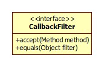
Cglib的Enhancer可以指定一个Callback数组，而accept方法的返回值是一个int值，其实就是Callback数组的下标，这样便达到了指定回调逻辑的目的。
参考:
CGLIB介绍与原理
回调 一般的方法使用的是DynamicAdvisedInterceptor作为回调逻辑，其intercept关键源码:
1 2 3 4 @Override public Object intercept (Object proxy, Method method, Object[] args, MethodProxy methodProxy) Object target = getTarget(); }
target就是被代理对象。
getTarget:
1 2 3 protected Object getTarget () throws Exception return this .advised.getTargetSource().getTarget(); }
TargetSource前面说过了，默认是SimpleBeanTargetSource:
1 2 3 4 @Override public Object getTarget () throws Exception return getBeanFactory().getBean(getTargetBeanName()); }
至此，真相大白。
aop:aspectj-autoproxy 此标签用以开启对于@AspectJ注解风格AOP的支持。
属性 proxy-target-class 你懂的。
expose-proxy 是否应该把代理对象暴露给AopContext，默认false。
栗子 切面 1 2 3 4 5 6 7 8 9 @Aspect public class AspectDemo @Pointcut ("execution(void base.aop.AopDemo.send(..))" ) public void beforeSend () @Before ("beforeSend()" ) public void before () System.out.println("send之前" ); } }
被代理类 1 2 3 4 5 6 7 8 9 10 11 12 public class AopDemo implements AopDemoInter public void send () System.out.println("send from aopdemo" ); } public void receive () System.out.println("receive from aopdemo" ); } @Override public void inter () System.out.println("inter" ); } }
配置 1 2 3 <aop:aspectj-autoproxy proxy-target-class ="true" /> <bean class ="base.aop.AopDemo" /> <bean class ="base.aop.annotation.AspectDemo" />
因为AopDemo实现了AopDemoInter接口，但做实验的send方法又不在此接口里定义，所以只能用cglib的方式代理。
可以看出，即使标注了@Aspect注解，仍然需要将切面自己配置到Spring容器中。
解析 AspectJAutoProxyBeanDefinitionParser.parse:
1 2 3 4 5 6 7 @Override public BeanDefinition parse (Element element, ParserContext parserContext) AopNamespaceUtils. registerAspectJAnnotationAutoProxyCreatorIfNecessary(parserContext, element); extendBeanDefinition(element, parserContext); return null ; }
注册最终在AopConfigUtils.registerOrEscalateApcAsRequired方法中完成，创建器实际上是一个AnnotationAwareAspectJAutoProxyCreator类的对象，此类是前面AspectJAwareAdvisorAutoProxyCreator的子类。
原理 既然是AspectJAwareAdvisorAutoProxyCreator的子类，那么其代理子类的创建等核心逻辑自然是一样的。这里所需要关注的地方自然是所不一样的地方: 即是如何体现其注解的特性的。
前面说过，AspectJAwareAdvisorAutoProxyCreator通过findCandidateAdvisors方法来找到适用于bean的Advisor，所以注解的特性也是通过重写此方法来体现。
AnnotationAwareAspectJAutoProxyCreator.findCandidateAdvisors:
1 2 3 4 5 6 7 @Override protected List<Advisor> findCandidateAdvisors () List<Advisor> advisors = super .findCandidateAdvisors(); advisors.addAll(this .aspectJAdvisorsBuilder.buildAspectJAdvisors()); return advisors; }
buildAspectJAdvisors方法所做的便是从容器中得到所有的bean，逐一判断是不是一个Aspect 。那么判断Aspect的依据是什么?
AbstractAspectJAdvisorFactory.isAspect:
1 2 3 4 @Override public boolean isAspect (Class<?> clazz) return (hasAspectAnnotation(clazz) && !compiledByAjc(clazz)); }
至于其它的实现细节不再探究。
总结 Spring对于AspectJ风格AOP的支持停留在外表(注解)上面，内部的实现仍然是自己的东西。
拾遗 AOP切面的坑
定义在private方法上的切面不会被执行，这个很容易理解，毕竟子类不能覆盖父类的私有方法。
同一个代理子类内部的方法相互调用不会再次执行切面。
这里以Cglib为例对第二点进行说明，cglib的相关核心组件可以参考前面CallbackFilter & Callback部分。对于配置了一个切面的典型场景，Spring内部的执行流程可总结如下图:
核心便是对目标方法的调用上，这里由CglibMethodInvocation的invokeJoinpoint实现:
1 2 3 4 5 6 7 8 @Override protected Object invokeJoinpoint () throws Throwable if (this .publicMethod) { return this .methodProxy.invoke(this .target, this .arguments); } else { return super .invokeJoinpoint(); } }
如果是非public方法，那么Spring将使用反射的方法对其进行调用，因为反射将其可访问性设为true。MethodProxy是Cglib对方法代理的抽象，这里的关键是方法调用的对象(目标)是我们的原生类对象，而不是Cglib代理子类的对象，这就从根本上决定了对同类方法的调用不会再次经过切面 。
总结 前面aop:aspectj-autoproxy-属性-expose-proxy一节提到了，Spring允许我们将代理子类暴露出来，可以进行如下配置:
1 2 3 <aop:config expose-proxy ="true" > <aop:advisor advice-ref ="simpleMethodInterceptor" pointcut ="execution(* aop.SimpleAopBean.*(..))" /> </aop:config >
当我们需要在一个被代理方法中调用同类的方法时(此方法也需要经过切面)，可以这样调用:
1 2 3 4 public void testB () System.out.println("testB执行" ); ((SimpleAopBean) AopContext.currentProxy()).testC(); }
这里其实是一个ThreadLocal，当Cglib代理子类创建调用链之间便会将代理类设置到其中，DynamicAdvisedInterceptor.intercept相关源码:
1 2 3 4 5 if (this .advised.exposeProxy) { oldProxy = AopContext.setCurrentProxy(proxy); setProxyContext = true ; }
申明 本文转载自seaswalker的github ，转载授权 ，由我在万达摆地摊 整理发布。